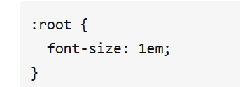

web面试总结
注意！本总结忽略一些过于基础的问题
HTML
DOCTYPE的作⽤是什么?
DOCTPYE是html5标准网页声明，且必须声明在HTML文档的第一行，来告知浏览器用什么文档标准解析这个文档，不同的渲染模式会影响到浏览器对于CSS代码甚至JS的脚本解析。
文档解析类型有：
(1)
BackCompat：怪异模式，(如果没有声明DOCTYPE，默认就是这个模式)
(2)
CSS1Compat：标准模式，浏览器使用W3C的标准解析渲染页面。
备注： 现在，这些模式都已经被标准化了，准标准模式已和标准模式相同，而标准模式成为了默认表现。标准模式和准标准模式这两个名字已经失去了意义，不再在规范文档中出现。
欲深入了解请点击
HTML、XHTML、XML有什么区别？
HXML(超文本标记语言)：在html4.0之前HTML先有实现再有标准，导致HTML⾮常混乱和松散
XML(可扩展标记语言)：主要⽤于存储数据和结构，可扩展，⼤家熟悉的JSON也是相似的作⽤，但是更加轻量⾼效，所以XML现在市场越来越⼩了
XHTML(可扩展超文本标记语言)：基于上面两者而来，W3C为了解决HTML混乱问题而生，并基于此诞生了HTML5。(开头加⼊!DOCTYPE的做法因此⽽来，如果不加就是兼容混乱的HTML，加了就是标准模式。)
你对HTML语义化的理解？
对开发者友好，代码可读性强，网页结构更清晰。且带有语义的文字表现力丰富，更适合搜索引擎的爬虫爬取有效信息。还能支持读屏软件，根据文章可以自动生成目录。
常用的meta标签？
meta标签由name和content两个属性来定义，来描述⼀个HTML⽹⻚⽂档的属性，例如作者、⽇期和时间、⽹⻚描述、关键词、⻚⾯刷新等，除了⼀些http标准规定了⼀些name作为⼤家使⽤的共识，开发者也可以⾃定义name。
charset：⽤于描述HTML⽂档的编码形式
http-equiv：我们有时会在meta标签中看到http-equiv="x-ua-compatible"，其实这个属性的作用就是对IE浏览器做的一个兼容模式。比如你使用IE9浏览器，那么就算在兼容模式切换至IE7，但仍会渲染成IE9的样子。
x-ua-compatible这个属性值是在IE8版本出现的，所以对于IE8以下的版本无效。
viewport：移动前端适配，Web开发⼈员可以控制视⼝的⼤⼩和⽐例
src和href的区别？
src是指向外部资源的位置，指向的内容会嵌⼊到⽂档中当前标签所在的位置，在请求src资源时会将其指向的资源下载并应⽤到⽂档内，如js脚本，img图⽚和frame等元素。当浏览器解析到该元素时，会暂停其他资源的下载和处理，直到将该资源加载、编译、执⾏完毕，所以⼀般js脚本会放在底部⽽不是头部。
href是指向⽹络资源所在位置（的超链接），⽤来建⽴和当前元素或⽂档之间的连接，当浏览器识别到它指向的⽂件时，就会并⾏下载资源，不会停⽌对当前⽂档的处理。
知道img的srcset的作⽤是什么？
img元素的srcset属性用于浏览器根据宽、高和像素密度来加载相应的图片资源。
<img src="small.jpg " srcset="big.jpg 1440w, middle.jpg 800w, small.jpg 1x" />
上面的例子表示浏览器宽度达到 800px 则加载 middle.jpg ，达到 1440px 则加载 big.jpg。注意：像素密度描述只对固定宽度图片有效。
script标签中defer和async的区别？
defer：浏览器指示脚本在⽂档被解析后执⾏，script被异步加载后并不会⽴刻执⾏，⽽是等待⽂档被解析完毕后执
⾏。
async：同样是异步加载脚本，区别是脚本加载完毕后⽴即执⾏，这导致async属性下的脚本是乱序的，对于script
有先后依赖关系的情况，并不适⽤。
有⼏种前端储存的⽅式？
cookies、localstorage、sessionstorage、Web SQL、IndexedDB
这些⽅式的区别是什么？
cookies： 在HTML5标准前本地储存的主要⽅式，优点是兼容性好，请求头⾃带cookie⽅便，缺点是⼤⼩只有4k，
⾃动请求头加⼊cookie浪费流量，每个domain限制20个cookie，使⽤起来麻烦需要⾃⾏封装
localStorage：HTML5加⼊的以键值对(Key-Value)为标准的⽅式，优点是操作⽅便，永久性储存（除⾮⼿动删除），⼤⼩为5M，兼容IE8+
sessionStorage：与localStorage基本类似，区别是sessionStorage当⻚⾯关闭后会被清理，⽽且与cookie、localStorage不同，他不能在所有同源窗⼝中共享，是会话级别的储存⽅式
Web SQL：2010年被W3C废弃的本地数据库数据存储⽅案，但是主流浏览器（⽕狐除外）都已经有了相关的实现，web
sql类似于SQLite，是真正意义上的关系型数据库，⽤sql进⾏操作，当我们⽤JavaScript时要进⾏转换， 较为繁琐。
IndexedDB：
是被正式纳⼊HTML5标准的数据库储存⽅案，它是NoSQL数据库，⽤键值对进⾏储存，可以进⾏快速读取操作，⾮常适合web场景，同时⽤JavaScript进⾏操作会⾮常⽅便。
WEB SQL基本弃用，关于IndexdDB的详细介绍和用法点这里
CSS
link和@import的区别？
link属于XHTML标签，⽽@import是CSS提供的。
⻚⾯被加载时，link会同时被加载，⽽@import引⽤的CSS会等到⻚⾯被加载完再加载。
import只在IE 5以上才能识别，⽽link是XHTML标签，⽆兼容问题。link⽅式的样式权重⾼于@import的权重。
有哪些⽅式（CSS）可以隐藏⻚⾯元素？
opacity:0 ：本质上是将元素的透明度将为0，就看起来隐藏了，但是依然占据空间且可以交互
visibility:hidden : 与上⼀个⽅法类似的效果，占据空间，但是不可以交互了
overflow:hidden : 这个只隐藏元素溢出的部分，但是占据空间且不可交互
display:none : 这个是彻底隐藏了元素，元素从⽂档流中消失，既不占据空间也不交互，也不影响布局
z-index:-9999 : 原理是将层级放到底部，这样就被覆盖了，看起来隐藏了
transform: scale(0,0) : 平⾯变换，将元素缩放为0，但是依然占据空间，但不可交互
还有⼀些靠绝对定位把元素移到可视区域外，或者⽤clip-path进⾏裁剪的操作过于Hack，就不提了。
怎么设置rem？

伪类 :root 等价于 html 选择器,.625em就是10px
如何理解z-index？
CSS 中的z-index属性控制重叠元素的垂直叠加顺序，默认元素的z-index为0，我们可以修改z-index来控制元素的图层位置，⽽且z-index只能影响设置了position值的元素。
如何理解层叠上下⽂？
层叠上下⽂是HTML元素的三维概念，这些HTML元素在⼀条假想的相对于⾯向（电脑屏幕的）视窗或者⽹⻚的⽤户的z 轴上延伸，HTML元素依据其⾃身属性按照优先级顺序占⽤层叠上下⽂的空间。
响应式设计与自适应设计的区别？
响应式设计： 响应式开发一套界面，通过检测视口分辨率，针对不同客户端在客户端做代码处理，来展现不同的布局和内容。
自适应设计：自适应需要开发多套界面，通过检测视口分辨率，来判断当前访问的设备是 PC 端、平板还是手机，从而请求服务层，返回不同的页面。
什么是媒体查询？
媒体查询能在不同的条件下使用不同的样式，使页面在不同在终端设备下达到不同的渲染效果
使用：
通过 link 标签中判断设备的尺寸，从而引用不同的 css 样式文件
style.css 样式被用在宽度小于或等于 480px 的手持设备上，或者被用于屏幕宽度大于或等于 960px 的设备上
<link rel="stylesheet" type="text/css" href="style.css" media="handheld and (max-width:480px),
screen and (min-width:960px)" />
CSS中通过 @media 判断设备的尺寸应用不同的 css 样式
屏幕大于 1024px 或小于 1440px 时应用该样式
@media screen and (min-width: 1024px) and (max-width: 1440px) {
...
}
谈谈对BFC的理解
书⾯解释：BFC(Block Formatting Context)
Formatting context：块级上下⽂格式化，它是⻚⾯中的⼀块渲染区域，并且有⼀套渲染规则，它决定了其⼦元素将如何定位，以及和其他元素的关系和相互作⽤
简⽽⾔之，它是⼀块独⽴的区域，让处于BFC内部的元素与外部的元素互相隔离
作用：防⽌margin发⽣重叠。防⽌⽂字环绕。防⽌元素塌陷
为什么有时候⼈们⽤translate来改变位置⽽不是定位？
translate()是transform的⼀个值。改变transform或opacity不会触发浏览器重新布局（reflow）或重绘（repaint），只会
触发复合（compositions）。⽽改变绝对定位会触发重新布局，进⽽触发重绘和复合。transform使浏览器为元素创建⼀个 GPU 图层，但改变绝对定位会使⽤到 CPU。
因此translate()更⾼效，可以缩短平滑动画的绘制时间。
⽽translate改变位置时，元素依然会占据其原始空间，绝对定位就不会发⽣这种情况。
伪类和伪元素的区别是什么？
伪类是⼀个以冒号(:)作为前缀，被添加到⼀个选择器末尾的关键字，当你希望样式在特定状态下才被呈现到指定的元素时，你可以往元素的选择器后⾯加上对应的伪类。
伪元素⽤于创建⼀些不在⽂档树中的元素，并为其添加样式。⽐如说，我们可以通过::before来在⼀个元素前增加⼀些⽂本，并为这些⽂本添加样式。虽然⽤户可以看到这些⽂本，但是这些⽂本实际上不在⽂档树中。
关于CSS的动画与过渡问题
transition过渡是通过初始和结束两个状态之间的平滑过渡实现简单动画的；而animation则是通过关键帧@keyframes来实现更为复杂的动画效果。
深入了解transition
深入了解animation
JavaScript
解释下变量提升？
JavaScript引擎的⼯作⽅式是，先解析代码，获取所有被声明的变量，然后再⼀⾏⼀⾏地运⾏。这造成的结果，就是所有的变量的声明语句，都会被提升到代码的头部，这就叫做变量提升（hoisting）。
console.log(a)
var a = 1
可以看作：
var a
console.log(a)
a=1
所以输出undefinded，不信就f12
ES6模块与CommonJS模块有什么区别？
CommonJS是对模块的浅拷⻉，ES6 Module是对模块的引⽤,即ES6 Module只存只读，不能改变其值，具体点就是指针指向不能变，类似const。
import的接⼝是read-only（只读状态），不能修改其变量值。 即不能修改其变量的指针指向，但可以改变变量内部指针指向,可以对commonJS对重新赋值（改变指针指向），但是对ES6
Module赋值会编译报错。
BigInt
JavaScript中Number.MAX_SAFE_INTEGER表示最⼤安全数字,计算结果是9007199254740991，即在这个数范围内不
会出现精度丢失（⼩数除外）。但是⼀旦超过这个范围，js就会出现计算不准确的情况，这在⼤数计算的时候不得不依靠⼀些第三⽅库进⾏解决，因此官⽅提出了BigInt来解决此问题。
0.1+0.2为什么不等于0.3？
因为js只认识0、1 二进制串，所以计算的时候会产生精度丢失。
详情请点击
JavaScript垃圾回收
1.1 标记清除（Mark-and-Sweep）
标记清除算法：在程序运行时间中定期扫描内存中的对象，标记那些不再使用的对象，然后清除这些标记的对象。
弊端：
时间开销：因为在程序运行时间中需要定期扫描内存中的对象，标记那些不再使用的对象，然后清除这些标记的对象，所以会带来一定的时间开销。
空间开销：在扫描内存对象的过程中，需要为每个对象额外分配一些空间来存储标记信息，这样会带来一定的空间开销。
整理碎片：因为标记清除算法是通过标记某些对象来进行回收，所以会产生空间碎片，这些碎片可能会影响程序的性能。
不能处理循环引用：标记清除算法只能处理那些不再使用的对象，如果存在循环引用的情况，可能会导致一些对象不能被正确回收。
1.2 引用计数（Reference Counting）
引用计数算法：每个对象都有一个引用计数器，当有变量或对象指向它时，该对象的计数器就会增加；当没有变量或对象指向它时，该对象的计数器就会减少。如果一个对象的计数器为 0，那么它就会被垃圾回收机制回收。
弊端：
复杂度：引用计数算法需要维护每个对象的引用计数器，每次对象引用关系发生变化时都需要更新计数器，这会带来较高的复杂度。
无法处理循环引用：如果两个对象相互引用，但是都不再被使用，由于计数器都不为0，于是都不会被回收，这就会导致内存泄漏。
无法处理闭包：当一个闭包中的变量不再使用时，对应的计数器不会变为0，这样就会导致闭包中的变量不能被回收。
高开销：引用计数算法会对性能产生很大的开销，因为要不断的跟踪每个对象的引用关系。